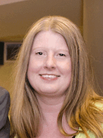

Former Students and Faculty

Chelsey Legacy
Student
2017–2022
Chelsey Legacy finished her doctoral work in 2022. Her dissertation topic was: Understanding the development of students’ multivariate statistical thinking in a data visualization course. Chelsey is an Assistant Professor of Teaching in the Department of Educational Psychology at the University of Minnesota. To learn more, visit her faculty page.
Jonathan Brown
Student
201x–2021
Jonathan Brown finished his doctoral work in 2021. his dissertation topic was: Student Understanding of the Hypothetical Nature of Simulations in Introductory Statistics. Jonathan is a Research and Project Management Analyst at the Office of Measurement Services at the University of Minnesota. To learn more, visit his professional page.
Ethan Brown
Student
201x–2019
Ethan Brown finished his doctoral work in 2019. his dissertation topic was: Growing Certain: Students’ Mechanistic Reasoning about the Empirical Law of Large Numbers. Ethan is Associate Director at the Research Methodology Consulting Center at the University of Minnesota.
Elizabeth Brondos Fry
Student
2012–2017
Elizabeth Brondos Fry finished her doctoral work in 2017. Her dissertation topic was: Introductory Statistics Students’ Conceptual Understanding of Study Design and Conclusions. Elizabeth is an Evaluation Associate at the Center for Creative Leadership. To learn more, visit her professional page.
Laura Le
Student
2009–2017
Laura Le finished her doctoral work in 2017. Her dissertation topic was: Assessing the Development of Students’ Statistical Thinking: An Exploratory Study. Laura is a Lecturer in the Division of Biostatistics at the University of Minnesota. To learn more, visit her Faculty page.
Nicola Justice
Student
201x–2017
Nicola Justice finished her doctoral work in 2017. Her dissertation topic was: Statistics Graduate Students’ Professional Development for Teaching: A Communities of Practice Model. Nicola is an Assistant Professor in the Department of Mathematics at Pacific Lutheran University. To learn more, visit her faculty page.
Anelise Sabbag
Student
2011–2016
Anelise Sabbag started as a Master’s student in 2011. She then entered the Ph.D. program in 2013 and finished her doctoral work in 2016. Her dissertation topic was: Examining the Relationship between Statistical Literacy and Statistical Reasoning. Anelise is an Associate Professor in the Department of Statistics at Cal Poly, San Luis Obispo. To learn more, visit her Faculty page.
Matthew Beckman
Student
2009–2015
Matt Beckman was a Ph.D. student from 2009–2015. His dissertation topic was: Assessment of Cognitive Transfer Outcomes for Students of Introductory Statistics. Matt currently is an Associate Research Professor and Chair of Undergraduate Curricula in the Department of Statistics at Penn State University. To learn more, visit his faculty page.
Laura Ziegler
Student
2009–2013
Laura Ziegler was a Ph.D. student from 2009–2013. Her dissertation topic was: Reconceptualizing Statistical Literacy: Developing an Assessment for the Modern Introductory Statistics Course. Laura currently is a Teaching Professor in the Department of Statistics at Iowa State University. To learn more, visit her fFaculty page](https://www.stat.iastate.edu/people/laura-ziegler).
Auðbjörg Björnsdóttir
Student
2008–2012
Auðbjörg Björnsdóttir was a Ph.D. student from 2008–2012. Her dissertation topic was: Evaluating the Use of Two Different Models of Collaborative Tests in an Online Introductory Statistics Course. Auðbjörg currently works as the Director of Centre for Teaching and Learning at the University of Akureyri (Iceland). To learn more, visit her faculty page.
Jiyoon Park
Student
2008–2012
Jiyoon Park was a Ph.D. student from 2008–2012. Her dissertation topic was: Developing and Validating an Instrument to Measure College Students’ Inferential Reasoning in Statistics: An Argument-Based Approach to Validation. Jiyoon currently works as an AI scientist at AstraZeneca leading a methodology team in developing Benefit Risk Assessment framework to evaluate drugs’ benefits and risks in product development Lifecyle. To learn more, visit her LinkedIn page.
Andrew Zieffler
Student
2002–2006
Andrew Zieffler finished his dissertation in 2006. His dissertation topic was: A Longitudinal Investigation of the Development of College Students’ Reasoning About Bivariate Data During an Introductory Statistics Course. Andrew currently works as an Associate Teaching Professor in the Department of Educational Psychology at the University of Minnesota. To learn more, visit his faculty page.

Michelle Everson
Faculty
2002–2013
Michelle Everson was a faculty member in the Statistics Education Research Lab. She was involved in the lab until she left the University of Minnesota to take a position at the Ohio State University. To learn more, visit her faculty page.
Robert delMas
Faculty
2002–2016
Robert delMas was a faculty member in the Statistics Education Research Lab. He was involved as a faculty member since the lab’s inception in 2002 and retired in 2022. To learn more, visit his faculty page.
Joan Garfield
Faculty
2002–2016
Joan Garfield initiated the Statistics Education program in QME in 2002 and was the original director of the Statistics Education Research Lab. She retired in 2016. To learn more, visit her faculty page.